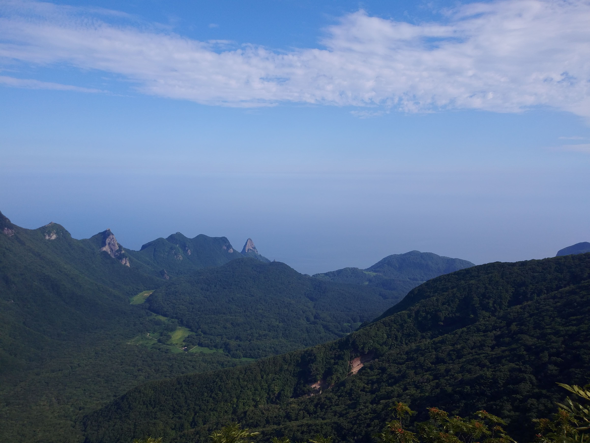
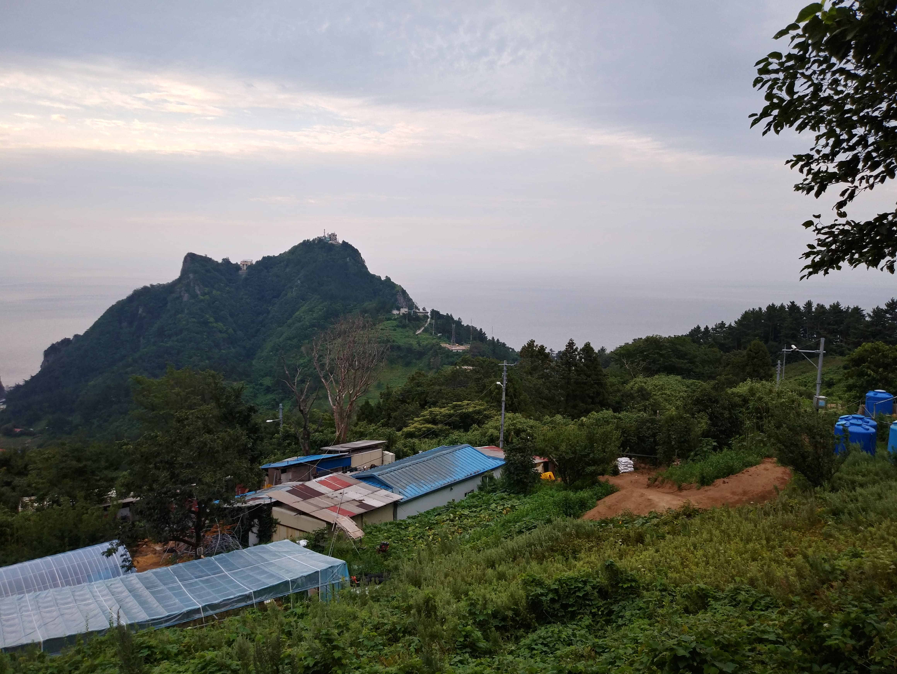
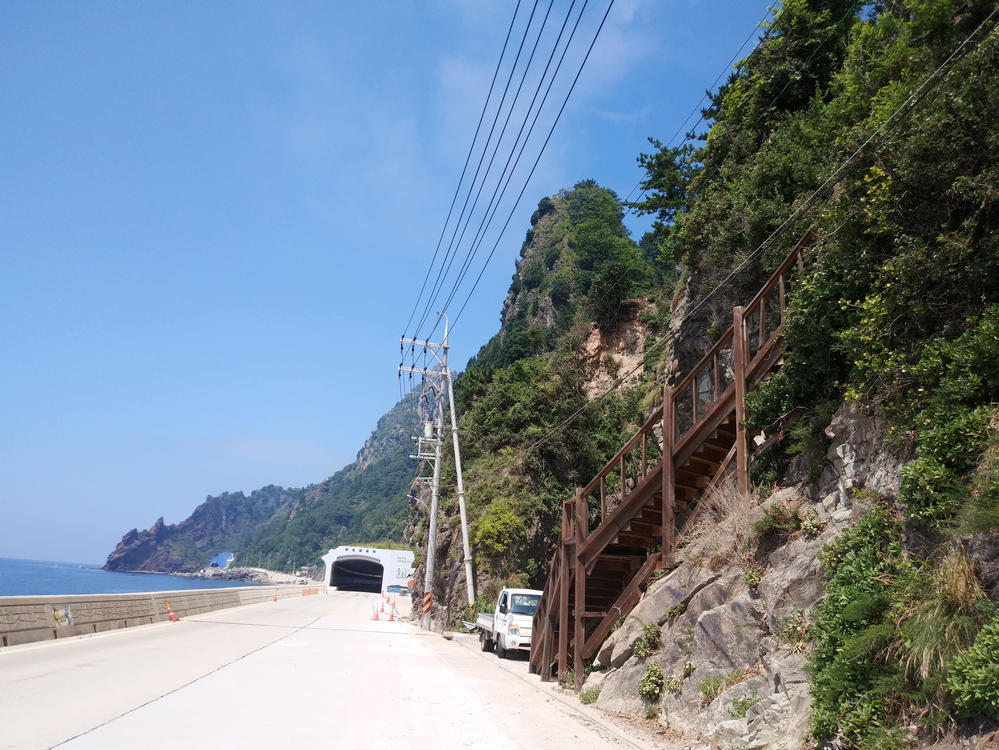
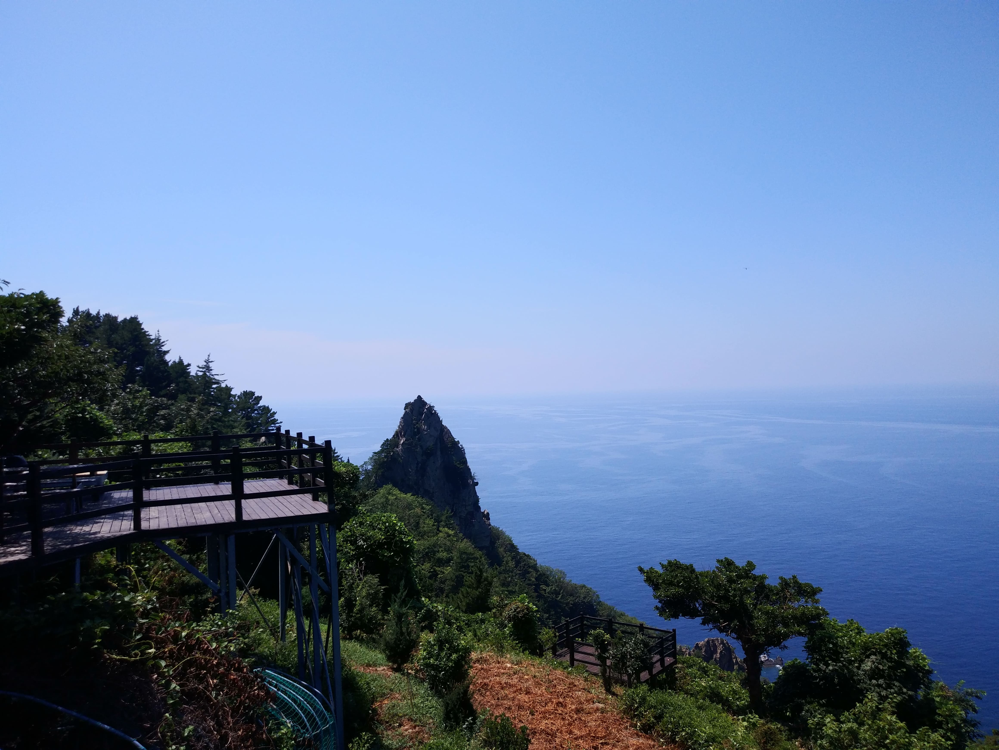
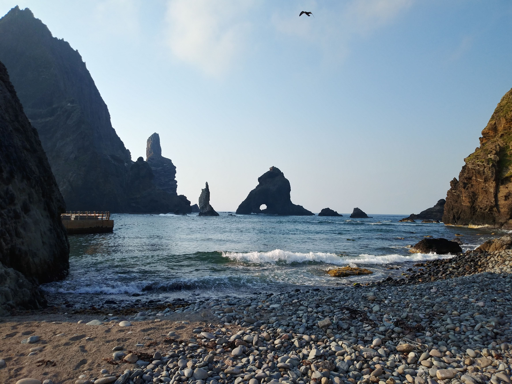
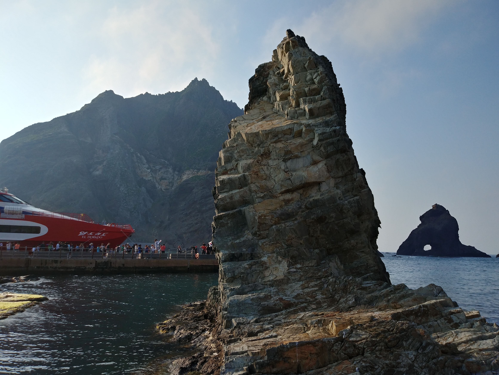
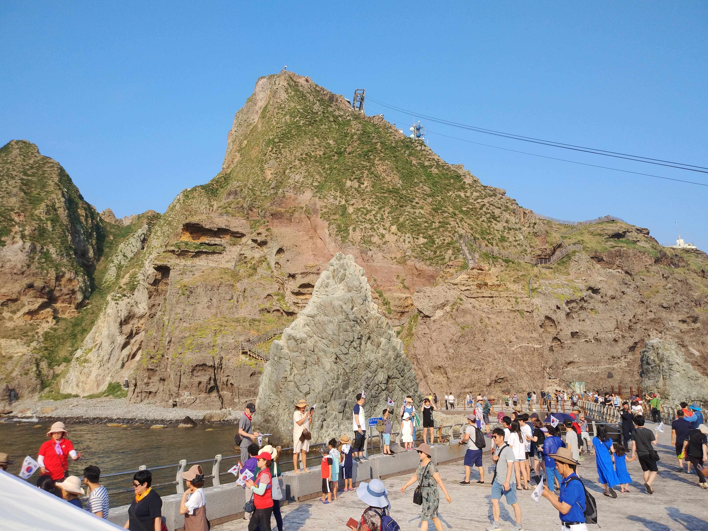
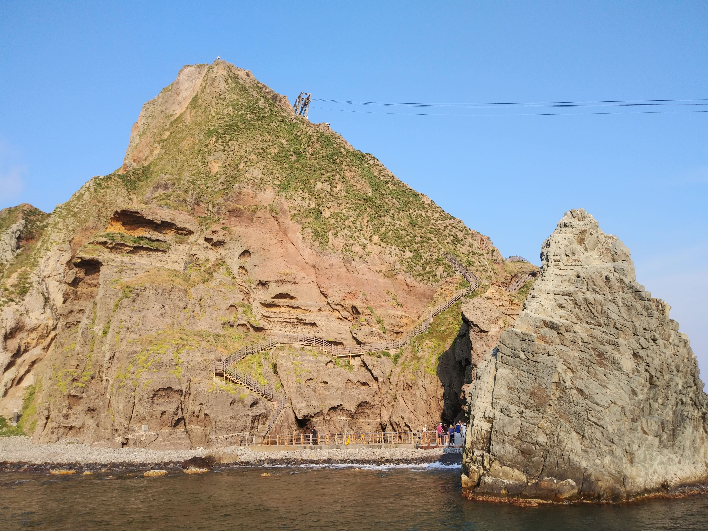
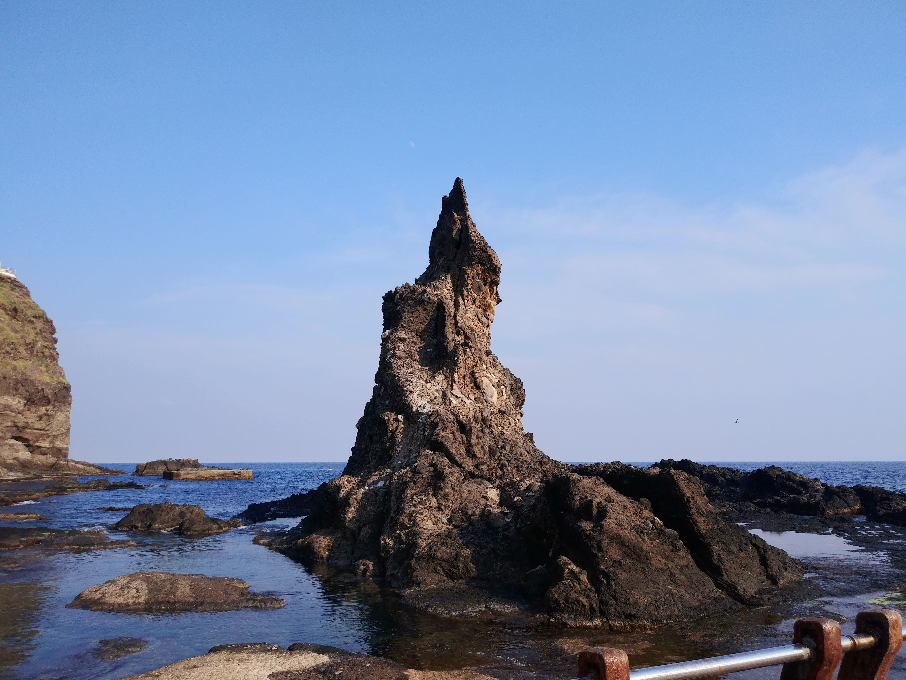

Second Day

성인봉
성인봉에서 본 전경

성인봉
성인봉 올가가는 도중 맞은편 전경

일주중 전경
올라 가는 계단이 보인다 (밭 농사용 인듯)

일주중 전경
경치가 좋아 1박2일 이 다녀간곳

독도에서
바위가 멋 있다 가운데 촛대바위가 보인다

독도에서
바위가 세월의 흔적이 담겨 있다

독도에서
수비대로 올라가는 계단이 보인다

독도에서
수비대로 올라가는 계단이 보인다

독도에서
바위가 세월의 흔적이 담겨 있다